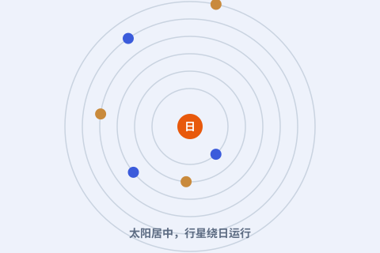
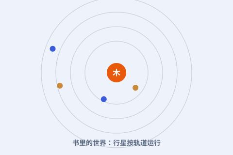
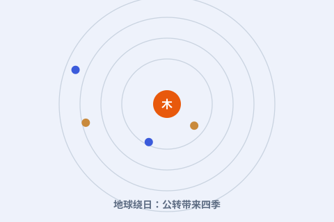

他把地球从宇宙的中心请了下来，让太阳坐了上去。一本临终才出版的书，悄悄改写了人类看天的方式。

点任意一张卡片，进入图文详解；看不懂的词，随时点开弹窗。
太阳在中心，地球只是绕日的一颗行星——这个念头，掀翻了千年宇宙观。

临终出版的一本书，用圆周运动把日心说写成可计算的体系。

地球每天自转一圈、每年绕日一圈；我们感觉不到，只因一起在动。
一次视角的转换：宇宙不再以人为中心，这打开了现代科学的大门。
尼古拉·哥白尼（1473—1543），波兰托伦人。他学过法律、医学和神学，却把最多心思花在星星上。
他一生大部分时间是个安静的教士兼医生，利用业余时间观测、计算，慢慢拼出一个大胆的想法：太阳，而不是地球，才是宇宙的中心。
他犹豫了很久才把想法写进书里；书出版时，他已躺在病床上，只来得及用目光与自己的著作告别。
看完整时间轴 →
面向中学生的科普小站：按时间顺序讲故事，把难词讲成人话。每个核心概念都能点开弹窗看通俗解释；想深入就读“详解页”；想动手就玩“实验”；不确定哪个词什么意思，去词典里搜。